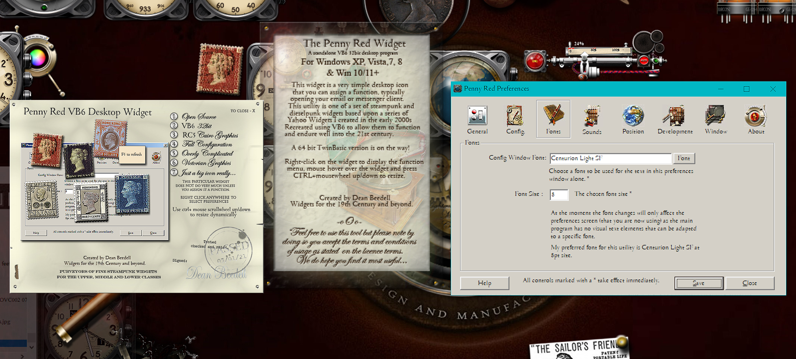
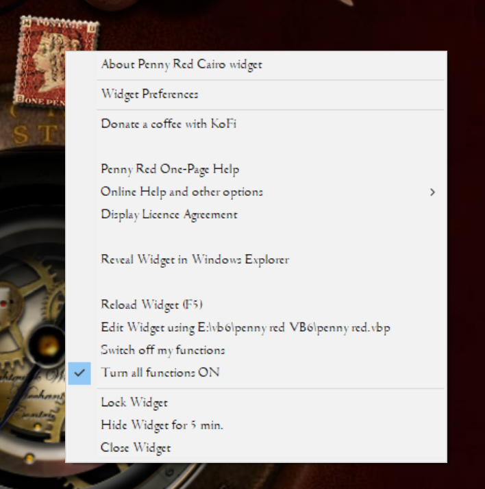
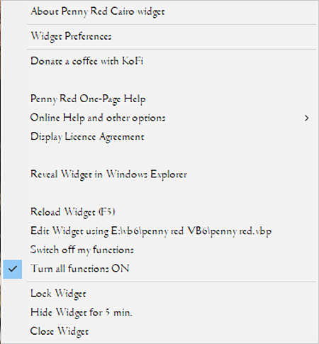
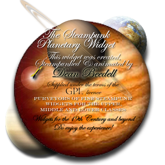
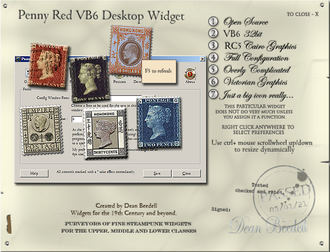
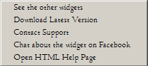

Installation
When you run the SETUP.EXE a splash screen will appear for 1 brief second, then it will suggest default locations where you can install this utility. When the installation is complete it will run the program. That is it.To uninstall the program, there is an uninstall.exe that will remove the application for you in the program folder. If you ever want to to reinstall a new version of the program, always uninstall the old version beforehand.
Anti Virus Tools
When you install the Penny Red Widget for the first time you will need to accept that your anti-virus tool will pause the installation to test the installation program for malware. Due to this program being written in VB6 and being a new program that your a/v tool has not encountered, it WILL flag it as being potentially malware. This is a FALSE POSITIVE. This only occurs with such tools as Avast or similar, see below.If you do not feel at ease with running this tool with an exception for malware scans, then I suggest you uninstall it and instead only run software you trust. To help you gain that trust, the source code for this utility is on github. You can view and edit that code at your leisure and you can even compile the code for yourself. This should give you the confidence that you need. There is a link on the tool's right click menu that will take you straight through to the github page here: https://github.com/yereverluvinunclebert/Penny-Red-VB6-Widget
The a/v tool I have installed on my PC is Avast - the following is what occurs on installation on my system: When Avast first encounters the SETUP.EXE file it will test this for malware, it takes approx. 20-30 seconds to complete a scan. Let it finish. Once done, the setup will then run the installation and finally it will run Penny Red Cairo Widget itself. At this point Avast will do another scan to test the Penny Red Widget program binary (the .exe file) which will take another 30 seconds or so. When that second scan is complete you will find the Penny Red on your desktop running nomally.
Until the Avast databases are updated and it fully trusts the program, Avast may try to scan it every time it is run. This is a pain but it will eventually go away. In the meantime, if you want to prevent your a/v tool from scanning (and being continually intrusive on a trusted program such as this) then you will need to set an exception or an exclusion within Avast (or whichever anti-virus tool you use). Eventually, the creators of the various a/v tools will become familiar with this particular utility and the binary will no longer raise any false positives nor alarms.
This is a new VB6 utility so it is an inevitable occurrence - being a new and unknown binary, it is of course frustrating but it will eventually go away.

Basic Functionality
When you install and run the widget for the first time it will present you with the licence screen and launch the prefs. You must accept the licence terms to proceed further. The Preference screen allows you to configure the functionality of the Penny Red 'widget'. You can assign a function to the widget that it will carry out on a double-click. Typically, I use it to initiate Thunderbird, my Email client. This widget's functionality is limited as it is just a template for eye-candy widgets yet to come, however, it can be increased in size, animation speed can be changed, opacity/transparency may be set as to the user's discretion. The widget can also be made to hide for a pre-determined period. If the application is already running then you can double-click to run a new instance of the binary and you will have two or more Penny Reds running on the desktop. As each Penny Red running program is a 'Widget' each will not appear on the taskbar. Widgets tend to operate underneath all your other programs and sit quietly on the desktop doing their thing.
Fig 01a. Showing The Penny Red Widget along with its associated panels.
Menus & Other Options

Fig 02. Penny Red Widget showing right click menu options.
You will note the use of the Centurion Light SF at 8pt on all the menu images shown in this document. This is the recommended font for use with this utility giving it a suitably old-fashioned feel. You will find the Centurion Light SF font below the Penny Red program resources folder in the "other" directory. You install this font by double-clicking on it. If this font is not installed and selected, the default font is Times New Roman.
A right-click on any icon in the icon pane will give you more options, the main menu is disclosed when right-clicking anywhere on the dock.

Fig 03. Penny Red Widget right click menu options .
About Penny Red Cairo Widget
When you select this option, the About Window provides a brief hint as to what this program is 'about' and who made it. There are more relevant details at the end of this document.

Fig 04. The About Window.
Widget Preferences.
The Widget Preferences screen will be described in more detail in the Preferences section of this help document. See below.
Donate a coffee with Kofi.
At any time you can donate a Coffee for this widget. It all really helps!
Penny Red widget Help.
When you select this option a brief one-screen help pop-up will appear.
widget
Fig 05. The Help Window.
Other

Fig 04. Other menu options
The "other" option gives access to extra menu options, the help (this page) and other useful functions.
The Licence Screen
When you select this option, a licence window will appear allowing you to accept or decline the licence. The licence screen will be described in more detail in the licence section of this help document. See below.
Reveal Widget in Windows Explorer.
When you select this option, a file explorer window will open using the folder location where your application is situated. A useful function to find an application quickly.
Reload Widget.
This option quietly stops and restarts the Penny Red Widget. On occasion the Penny Red Widget might have a tiny problem due to an unforeseen bug, in that case you can simply reset it by reloading the widget. If the widget has focus a key-press on the F5 key will also restart the widget.
Edit Widget
This menu option only appears if the DEBUG selection option is ON in the Development Preferences. In the pref.s, enter the path here to the .vbp file. If the widget's source code is unpacked and placed somewhere locally and the VB6 IDE is installed, this menu option will launch the VB6 IDE so you can edit the program, re-code and compile dynamically. A link to the github location will be found on the update button on the about page of the preferences.
Switch off my functions & Turn all my functions ON
These options are a toggle to stop and start the globe rotation.
Lock Widget
The globe can be made to lock into place so that it cannot be moved. This will also store the widget's current X,Y location on the screen, storing these values in the preferences. If the widget is restarted it will relocate to this position automatically.
 pennyredDesktop002.jpg
pennyredDesktop002.jpg